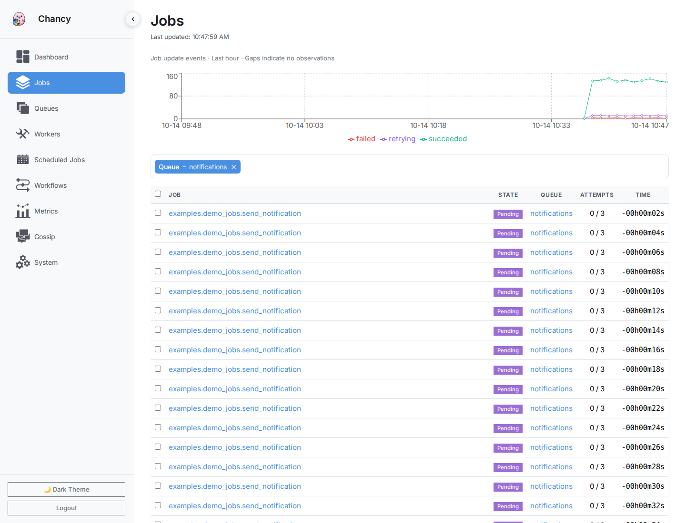
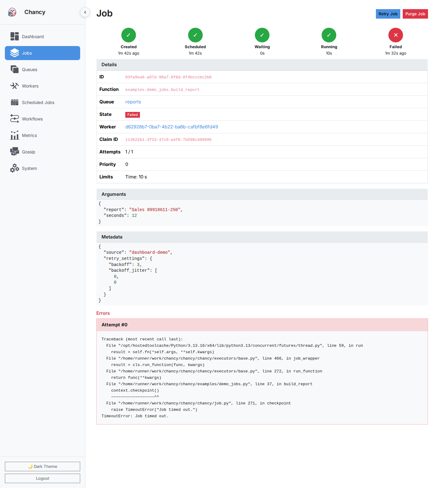
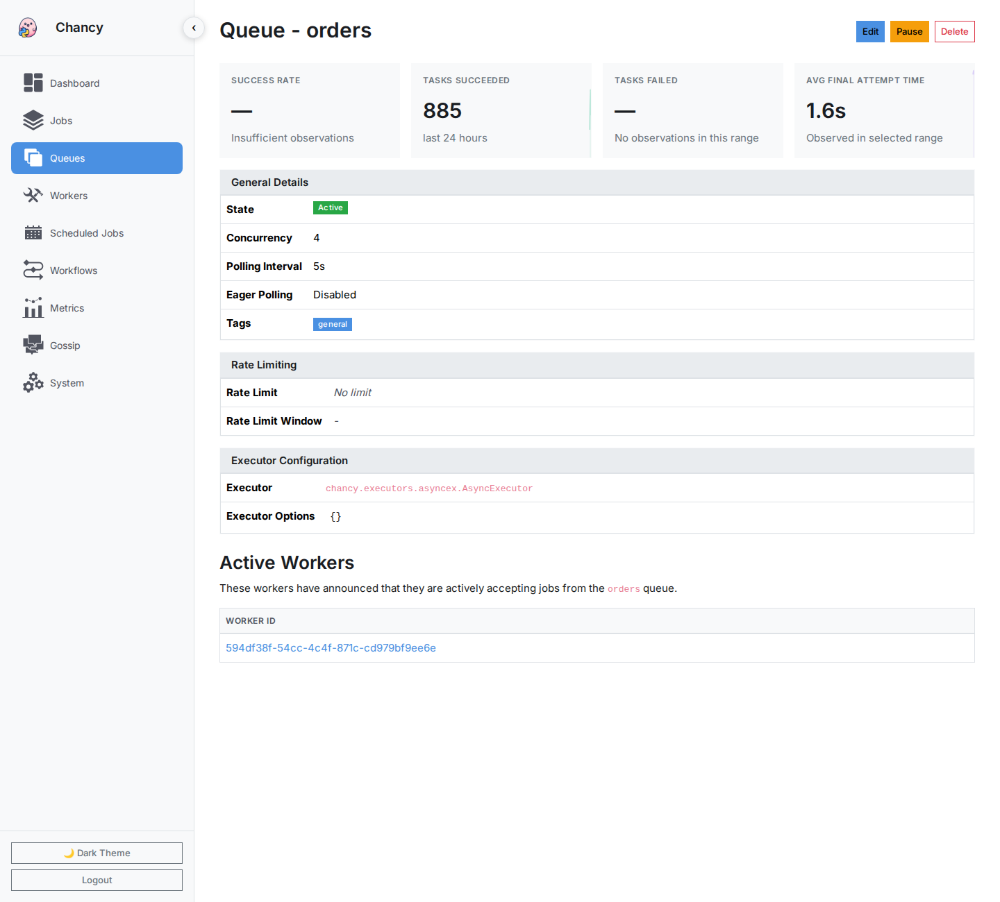
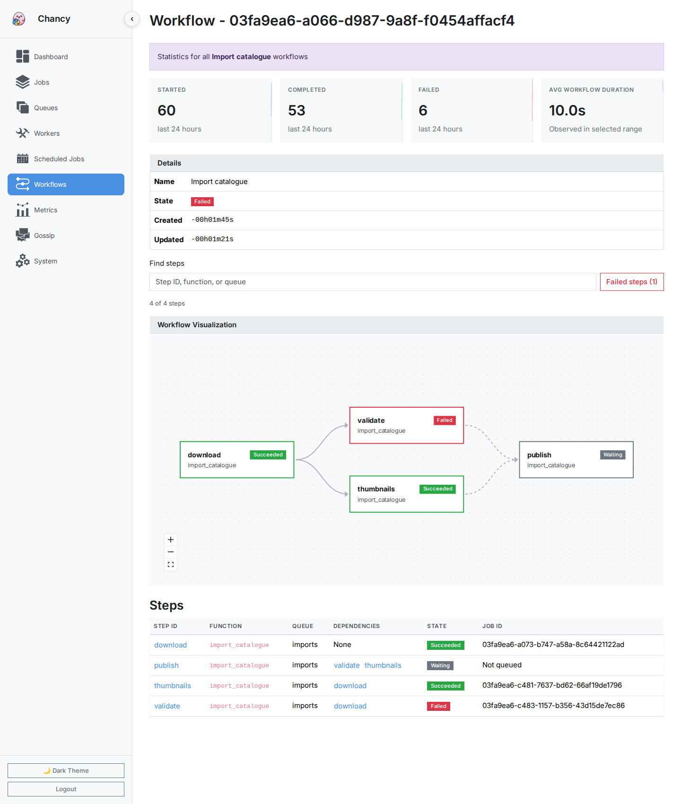

API/Dashboard¶
- class chancy.plugins.api.Api(*, port=8000, host='127.0.0.1', debug=False, allow_origins=None, secret_key=None, authentication_backend)[source]¶
Bases:
PluginProvides an API and a dashboard for viewing the state of the Chancy cluster.
Running this plugin requires a few additional dependencies, you can install them with:
pip install chancy[web]
To have the API run permanently on each Worker, you can add it to the plugins list when creating the Chancy instance:
from chancy.plugins.api import Api from chancy.plugins.api.auth import SimpleAuthBackend async with Chancy(..., plugins=[ Api( authentication_backend=SimpleAuthBackend({"admin": "password"}), secret_key="<a strong, random secret key>", ), ]) as chancy: ...
Note
The API is still mostly undocumented, as its development is driven by the needs of the dashboard and may change significantly before it becomes stable.
Since it’s very common to only want the dashboard temporarily, you can start it with the CLI. This can also be used to connect to a remote Chancy instance:
pip install chancy[cli,web] chancy --app worker.chancy worker web
This will run the API and dashboard on port 8000 by default (you can change this with the
--portand--hostflags), and generate a temporary random password for the admin user.Screenshots¶




- param port:
The port to listen on.
- param host:
The host to listen on.
- param debug:
Whether to run the server in debug mode.
- param allow_origins:
A list of origins that are allowed to access the API.
- class chancy.plugins.api.AuthBackend[source]¶
Bases:
AuthenticationBackend,ABC
- class chancy.plugins.api.SimpleAuthBackend(users)[source]¶
Bases:
AuthBackendA simple authentication backend that uses a dictionary of users and passwords.
- async authenticate(conn)[source]¶
- Parameters:
conn (HTTPConnection)
- Return type:
tuple[AuthCredentials, BaseUser] | None
- class chancy.plugins.api.plugin.ApiPlugin(api)[source]¶
Bases:
ABCA plugin that provides additional API endpoints.
- class chancy.plugins.api.core.CoreApiPlugin(api)[source]¶
Bases:
ApiPluginCore API plugin which implements the endpoints for jobs, queues, workers, etc…
- async static get_configuration(request, *, chancy, worker)[source]¶
Get the configuration of the Chancy instance.
- async static health(request, *, chancy, worker)[source]¶
Health check endpoint - returns 200 if the worker is healthy. Does not require authentication.
- Parameters:
request (Request)
- async static job(request, *, chancy, worker)[source]¶
GET: Get a single job by ID. DELETE: Purge a job by ID.
- async static jobs(request, *, chancy, worker)[source]¶
GET: Get a list of jobs with filters and pagination. POST: Batch job actions (retry, purge, cancel).
POST accepts
{"action": "retry", "ids": ["job-uuid", ...]}. Each distinct ID is processed independently, in request order. The response containsresultswith anid, astatusofcompleted,skipped, orfailed, and amessagefor skipped or failed items.okis true only if every item completed. Earlier successes are not rolled back when a later item fails.Missing jobs are skipped. Retry skips running jobs; cancel accepts pending, running, and retrying jobs and skips finished jobs. Purge deletes any existing job without cancelling its execution.
GET returns jobs in descending ID order. Pass the last returned ID as
beforeto fetch the next page of lower IDs with the same filters. Completion and scheduling times do not affect this order. Pages are live results, not a snapshot: jobs may be removed or stop matching filters between requests.Set
pagination=trueto receive an object withitems,has_more, andnext_cursor(an ID to pass asbefore, or null on the last page). Otherwise the response remains a job array.limitmust be positive and is capped at 100.- Parameters:
request (Request)
- async static jobs_functions(request, *, chancy, worker)[source]¶
GET: Get a list of distinct function names from jobs. Uses in-memory caching to avoid expensive DISTINCT queries.
- Parameters:
request (Request)
- async static plugins(request, *, chancy, worker)[source]¶
Get detailed information about all registered plugins.
- Parameters:
request (Request)
- async static queues(request, *, chancy, worker)[source]¶
GET: Get a list of all queues. POST: Create a queue.
Omitted fields use
Queuedefaults. Omitted tags match all workers; an explicit empty tag list leaves the queue unassigned, so no worker will process its jobs.- Parameters:
request (Request)
- chancy.plugins.api.core.parse_filters(filters_param, field_config)[source]¶
Parse filter triples and build a rule from them.
- Args:
filters_param: JSON string of filter triples [[key, op, value], …] field_config: Dict mapping field keys to (Rule, [allowed_operators])
- Returns:
tuple: (rule, error_response) - rule: Combined Rule object or None - error_response: Response object if error, None if success